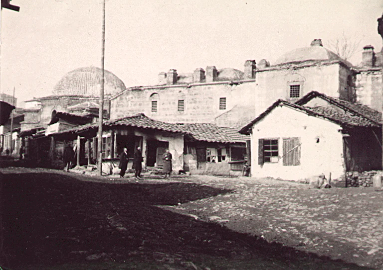
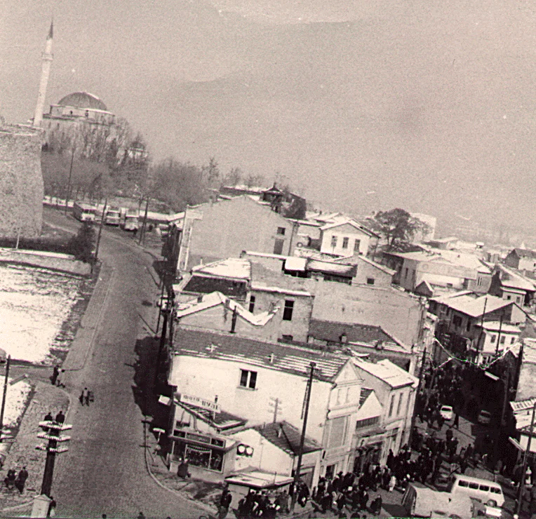
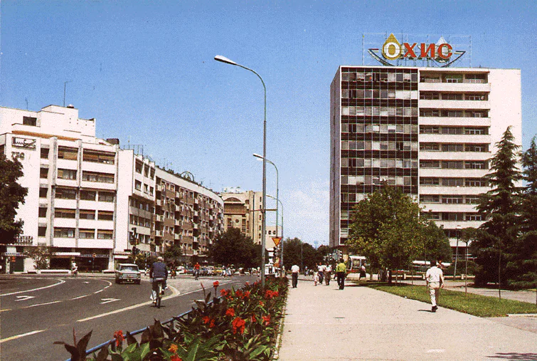
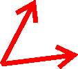

Mercado verde
- Producción
- UFUŽ y Cine Documental Praga
- Guion y dirección
- Slavko Janevski y EMAN CANERA
- Año
- 1959
- Duración
- 00:18

Casas cristianas de Skopie - 1870.

Parte del antiguo bazar de Skopie, 1902. Una hilera de tiendas con persianas frente al Kuršumli An. Al fondo se ve la torre del hammam Gülşen.

La calle principal en formación (hoy la calle «Makedonija», que va del actual Museo de la Ciudad de Skopie al puente de piedra). A la derecha se ve la iglesia católica de estilo gótico y, a la izquierda, algunos edificios. El tramo junto al puente de piedra se pavimentó en 1911 para el paso del sultán Murad V, que visitó Skopie antes de partir hacia Kosovo Polje.

La foto se tomó desde el edificio de la antigua estación - el actual Museo de la Ciudad de Skopie -, construida en 1873 durante el Imperio otomano. En primer plano, el acceso a la estación con zonas verdes cercadas. A continuación, la calle principal que lleva a la plaza. Al principio de la calle, a la izquierda, el hotel «Rusia».

Vista hacia la calle principal «Makedonija». El arco se levantó en honor de algún huésped importante. A su izquierda, el hotel «Rusia». - principios del siglo XX.

La calle principal con el hotel «Moskva» - años 1920

La calle principal, hoy Makedonija, que va del actual Museo de la Ciudad de Skopie a la plaza. Al final de la calle se ve el Casino de Oficiales y, a su derecha, la Cámara de Comercio - años 1930.

La calle principal, fotografiada hacia el actual Museo de la Ciudad de Skopie - hacia 1920.

La calle principal (la actual Makedonija), desde la plaza hacia la estación - hacia 1920.

La calle principal, Makedonija, del actual Museo de la Ciudad de Skopie hacia la plaza. A la izquierda, el hotel Bristol; a la derecha se ve el palacio Krang. (años 1930)

La calle principal que va del actual Museo de la Ciudad de Skopie a la plaza. Fotografiada junto al actual hotel «Bristol» y el palacio Krang. Al fondo se ve el Casino de Oficiales - hacia 1935.

La calle principal que va del actual Museo de la Ciudad de Skopie a la plaza. El edificio de la esquina es el palacio Krang - años 1930.

El palacio Krang. - años 1930.

La calle junto al malecón en la margen derecha del Vardar. - años 1930

Una calle de la parte antigua hacia el antiguo bazar - finales del siglo XIX.

La calle del puente de piedra hacia el antiguo bazar. - años 1920

Una calle de la parte antigua, hacia el barrio de Čair. En primer plano, una parada de coches de caballos y la vieja fuente turca. Al fondo, edificios de arquitectura popular antigua - años 1920.

El puente de piedra hacia el antiguo bazar. A la izquierda, una hilera de tiendas; a la derecha, la casa del dentista Dr. Ruben y otra hilera de tiendas hacia el antiguo bazar - hacia 1935.

La calle «Kruševska» en el barrio de Pajko, años 1920.

Esta calle ya no existe. Discurría paralela a la calle principal, de la plaza a la antigua estación (el actual Museo de la Ciudad de Skopie) - años 1920

La calle principal (la actual «Makedonija») - años 1920.

Una calle del antiguo bazar de Skopie. Al fondo, la mezquita de Mustafa Pachá. - años 1930

Una calle del antiguo bazar de Skopie. Al fondo se ve la mezquita de Mustafa Pachá. - años 1930

La calle «Cvetan Dimov» en el barrio de Čair, años 1940. Al fondo se ve la mezquita de Mehmed Pachá.

Skopie, años 1950. La entrada al antiguo bazar de Skopie - lugar de los grandes almacenes «Most». En primer plano, un grupo de tiendas derribadas tras el terremoto de 1963. A la izquierda se ve parte de la fortaleza de Skopie - Kale. Al fondo, la mezquita de Mustafa Pachá.

La pequeña plaza del antiguo bazar de Skopie, años 1950.

La calle 11 de Octubre, fotografiada desde la plaza hacia la actual Asamblea de la R. de Macedonia. Al fondo se ve el antiguo edificio de la Dirección de Asuntos Internos. - años 1950

La calle 11 de Octubre con la Asamblea de la R. de Macedonia a la izquierda. A la izquierda se ve también la torre medieval. Al fondo de la foto, parte del edificio de la antigua oficina de correos. - finales de los años 1950

La calle «Goce Delčev», fotografiada desde la plaza. En primer plano a la izquierda se ve parte del hotel «Makedonija», que se derrumbó en el terremoto de 1963. - años 1950

La calle principal hacia la plaza. En primer plano, la iglesia católica. - años 1950

La calle principal en dirección a la estación (el actual Museo de la Ciudad de Skopie). A la izquierda se ve la iglesia católica. - años 1950

La calle principal «Makedonija», hacia la plaza. - años 1950

Skopie, 1950. La parte oeste de la calle principal. A la izquierda, el hotel «Moskva».

En primer plano, el cruce de la calle 11 de Octubre y el bulevar Kočo Racin. A la derecha de la torre en construcción se ve la antigua panadería militar de la Primera Guerra Mundial - años 1950

El cruce del bulevar Kočo Racin y la calle 11 de Octubre. - años 1950

La calle junto al hospital municipal y la Universidad Obrera - años 1950

La calle 11 de Octubre - finales de los años 1970, hacia la plaza «Makedonija».

Vista desde la calle 11 de Octubre hacia la plaza «Makedonija». A la izquierda, viviendas; a la derecha, el edificio de la compañía eléctrica. - finales de los años 1970





 Acueducto4 postales
Acueducto4 postales Kale30 postales
Kale30 postales Puentes60 postales
Puentes60 postales Malecón58 postales
Malecón58 postales Plaza46 postales
Plaza46 postales Edificios66 postales
Edificios66 postales Templos cristianos19 postales
Templos cristianos19 postales Edificios musulmanes33 postales
Edificios musulmanes33 postales Casino de Oficiales29 postales
Casino de Oficiales29 postales Teatro28 postales
Teatro28 postales Estación de ferrocarril13 postales
Estación de ferrocarril13 postales Escuelas36 postales
Escuelas36 postales Parques12 postales
Parques12 postales Mercados18 postales
Mercados18 postales Calles38 postales
Calles38 postales Panorama I60 postales
Panorama I60 postales Panorama II30 postales
Panorama II30 postales Collages55 postales
Collages55 postales Inundaciones9 postales
Inundaciones9 postales Terremoto27 postales
Terremoto27 postales Skopie 200026 postales
Skopie 200026 postales